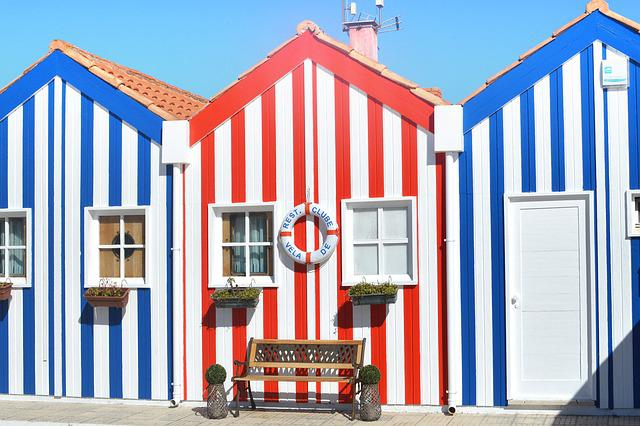

Intro
Portugal es un país ubicado al Oeste del continente europeo. Su lengua oficial es el portugues, es un punto turistico visitado por miles de turistas al año, y miles de encantos más. Ahora bien, vamos a lo que nos interesa, por qué Portugal para emigrar? El motivo principal es la "facilidad" de conseguir la documentación necesaria para permanecer de manera legal en el país. A continuación les dejo la información necesaria para poder emprender esta hermosa aventura.

Requisitos / Documentos
Para poder ingresar al país e iniciar los trámites todo lo que necesitas es el pasaporte de tu país de origen En el caso de los argentinos con el pasaporte vigente podemos llegar al pais e iniciar el permiso para permanecer en el pais.
Alquilar
Una vez en suelo portugues hay distintas opciones para buscar alojamiento por larga temporada. Se recomienda realizar la búsqueda una vez llegado al país para evitar estafas. Hay distintas páginas como Idealista y OLX, pero tambien se puede buscar por los grupos de whatsapp de la zona en la que quieran vivir. En Portugal al igual que en todos los países Europeos es común alquilar habitación en un departamento compartido, lo cual resulta beneficioso para quienes llegan con poco dinero. Los precios varian de acuerdo a la zona y al tipo de inmueble, pero inician en los U$D 350 alejados de grandes ciudades. Pero atención!! al llegar y no contar con un recibo de sueldo o nómina, como se lo conoce en Europa, es probable que te soliciten el pago por adelantado de 6 meses o más.
Tips!
Los anuncios aclaran cantidad de ambientes de la siguiente manera: "T0", "T2",etc. Un T0 seria un monoambiente y un T2 un piso de dos dormitorios.
Portales para buscal alquiler
Trabajo
Como?
Donde
¿Querés más info?
Suscribite y forma parte de esta comunidad y mantenete informado con las novedades.